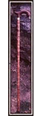
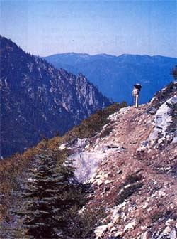
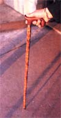
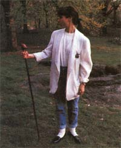

Just when you thought you needed a hand, you find instead. . .
I JUST RECEIVED MY FIRST OUTDOOR sports-related injury of the season. I was crashing around in some thick underbrush in the grove of trees behind the house and somehow managed to drive a long black locust thorn into my ankle. It could have been avoided if I'd been wearing boots instead of tennis shoes, but you know how that is. It was just 50 yards from the back door. I mean, it wasn't an expedition or anything.
I was going to write it off as a normal scrape, but by morning it was infected, and I had to make a trip to town for a tetanus booster and short lecture from the doctor about acting my age, which I thought I'd been doing.
Chances are I'll live.
What was I doing crashing around in the bush? I was cutting walking sticks. Every year I try to put in three or four good ones; not like those you pick up here and there as they're needed that are always too long, too short, too heavy, too light, too crooked or so rotten they break. I mean "perfect" sticks that are a little better than elbow high, reasonably straight, seasoned and stout-but not too heavy. The sticks you always look for when you need one, but can never find. I try to keep a few leaning against the woodpile on the front porch and another one handy in the back of the pickup.
Why three or four? Because they have this tendency to disappear.
You'll be out hiking and will come to a place where you need both hands to climb some rocks, so you leave the stick where you can find it later. But then you come back a different way and don't go out of your way to look for it. After all, it's just a stick. The woods are full of sticks, right?
Maybe you use it as a wading staff while fishing a rough stream and, coming back a different way again, leave it lying on the far bank. Or maybe it floats away while you're not looking. A stick will do that.
That's happened to me so many times that I now carry a length of decoy anchor cord with a dog-leash clip on one end as part of my normal fishing gear. The clip fastens to a D ring on the fly vest and the loose end gets tied to the stick-either the one I brought or the one I went to find when I saw how fast the water was.
Last year I gave a stick to a friend who was having trouble wading trout streams because of a bad knee. I liked his attitude. He didn't say he couldn't fish in certain places, he said he thought he needed a stick in order to forge ahead.
"Here's one," I said.
That's where the three I cut last year went.
I guess I was afraid my friend would actually go out and buy a walking stick), something my late father would not have believed possible. But, by thumbing through this year's stack of mail-order catalogs, I have determined that you can pay anywhere from $24.95 to $85 for a walking stick or "wading staff,"which is the aquatic version of the same item. The two are largely interchangeable, although if it has a lanyard on it, it's probably a wading staff.
Your basic commercial stick is made of hardwood, usually ash, and has a cord grip. Of course, we're not talking about just any old branch here, not for $24.95.
This is "select" ash wood that is, in some cases, "correctly tapered to eliminate vibrations in heavy current." I am sometimes bothered by those pesky vibrations in heavy current (as much in the legs as in the stick, but then again none of my walking sticks have ever been that correctly tapered. They have always come in whatever haphazard way the tree decided to make them.
The wood business can get a littleeffete at times. One company pointedly does not tell you what kind of wood it uses (the implication of this being that it is cocobolo rather than pine), forgets the cord handle and jacks the price to $39.95. For some unspecified reason, only a limited number of these are'' available.
On the high-tech end is the now-famous Folstaff. This is a wading staff made from sections of aluminum tubing that fit together like tent poles and have an elastic cord running down the middle of them. The staff pops apart and folds up to be carried in a holster on the fish erman's hip. When he feels the need for a stick-unless it's one of those very sudden and surprising needs-he simply unholsters the thing, gives it a wiggle, and it "instantly springs and locks into a sturdy staff."
This is a neat gadget and I like it, in spite of my, usual aversion to space-age outdoor gear, although it's not what I'd call a "stick" in the finest sense of the word.
A.K. uses one of these and swears by it, although at the end of some days I've had to help him pull the sections apart.
If the Folstaff is the ultimate in practicality, the Heritage Bamboo Wading Staff is the ultimate in class. This thing is made from tonkin cane, like a fly rod, and features a "jewel-like polished-brass thumb crotch" and a "distinctive cast-bronze rock gripping tip featuring the classic brush hook."
I like this one, too, although the price is a bit daunting at $85. Still, if a guy wanted to spend a lot of money to make himself seem a formidable fly-fisher, he'd have to buy one.
I've never felt the need to hook any brush while go fishing, but I might if I had the castbronze wherewithal to do so.
On the other hand I can't shake the feeling that a stick - I mean a stick, after all - is one of the few things left in life c hat should be, and in fact is, free for the taking. Collecti ng a stick in the field is both harm less and satisfying .
As a non-consumptive use of the countryside it's just a hair beneath bird- watching and photography, but well above hunting, fishing and fire building. And you don't need a license un less you're hauling them out by the cord for resale.
When you are out in the woods or walking along a trout stream, picking up a stick seems like such a natural thing to do: almost automatic. It's not always clear what you'll need it for, but you'll use it to pace your step, to lean on or maybe to turn over a rock and poke the garter snake you find underneath. Whatever, when you see a good one you take it because it's a basic, ancestral tool. It feels good in the hand because it's the thing we're genetically programmed to wrap our unique thumbs around.
The stick was one of the first two tools (the rock being the other), and, as a lever, it was one of the early concepts. Give me a fulcrum and a long enough lever, and I can move the world, someone in a grandiose mood once said. Its probably fair to say that any device that has a handle began its career as a convenient stick.
Like the fishing pole, for instance. A pole is a version of the stick, as are the shaft, rod, beam, stem, wand and so on. We don't have as many words for sticks as Eskimos have for snow, but we do have a few.
No one knows for sure, but I'd guarantee that the first fishing pole was a found object. Some guy working a wooded stream with a hand line looked around and said to himself, "Give me a stick long enough and I can catch that sucker on the far bank."
Even a fly rod is basically a stick. In fact, that's what you'll call it if you're properly hip. After trying one out, you might say, "That's one radical stick, man." IT WAS MY LATE FATHER who introduced me to walking sticks. Whenever we'd go for a stroll in the woods, as we often did when I was young, Dad would always stop with the first hundred yards or so and get a stick. Usually he'd just pick one up, sometimes he'd take out a sheath knife and cut one, but there was always a professional-looking process of selection to it. He'd look at it, wiggle it, sight down it, plant it on the ground and firm it there. Then he'd nod in approval and we'd set off on the walk proper. With a stick in hand, Dad's gait took on some of the aspects of a swagger.
I didn't quite understand what Dad was doing then (just some kind of grown-up weirdness, I figured, but I think I do now. A stick for casual walking or wading should have the proper heft, feel and weight: what amounts to the right style. It's a personal matter. You might like a heavier stick than I do, while I might like a longer one than yours. You might insist on near-perfect straightness, while I may be able to live with-or even prefer-a gentle, parabolic, straight-from-the-tree bow in mine. There are damned few straight lines in nature.
I like a smooth stick, but I can handle the butts of broken-off twigs-unless I'm fly-fishing. In that situation the stick and the fly line both lie downstream and one invariably gets tangled up with the other. Chances are you won't notice this until you get a nice fish on.
The criteria for selecting a good stick are subtle, but whatever you want, there's one out there in the woods right now that's perfect, as if it were grown just for you.
This year I got as fancy as I ever hope to get with a stick. Of the four I cut the day I hurt my ankle, one was clearly the best. It's a fairly straight piece of box elder ("select" box elder, that is) with a distinctive bow at the top that curves elegantly into a rough, gnarly knot that is the found-object equivalent of a silver boar's head. In a fit of nothing-better-to-do, I shaved the bark off and wrapped on a cord grip.
It's quite handsome, I think. If it were shorter and a bit stouter, it might pass for a knobkerrie (a weapon with one knobbed end. Longer and thinner would make it a staff. A friend called it a shillelagh, but a true shillelagh would have to be made of either oak or blackthorn to be absolutely authentic.
A shillelagh is also considered something of a weapon, and so far I have only leaned on mine, although in the months to come I'll probably rest the butt of a .22 pistol on it to steady my aim. The knot on the end is for decoration, but I suppose it would come in handy if I decided to give something a sound whop.
Mostly this is just a simple device to keep me from washing downstream when I go trout fishing.
I did injure myself while getting this stick-the best ones always seem to be way back in the brambles-and that could be a bad sign. We outdoorsmen can't help but believe in certain kinds of magic, although we call it "luck" now, and it could be that the thing contains a certain medicine. Time will tell. If bad luck dogs my walks with it, I'll pitch it in the river, peeled bark, cord handle and all.
In fact, I may have violated one of the main precepts of walking sticks by trying to make this one more or less permanent. For all of Dad's careful selection and obvious enjoyment of his sticks, he'd toss them at the end of the hike without even looking to see where they'd landed. It was an early hint that some things in life - good things, too - were expendable by nature.
Then again, in his later years my father had a stick that lasted a long time. It was just a dog-walking stick, and the dog, also in his later years, walked mostly on suburban streets. He still kept his nose to the ground, but I think he'd forgotten what he was supposed to be looking for.
The stick was a beautiful canelength piece of wood cut from a Chinese corkscrew willow tree: the kind of stick you'd expect to see in the hands of a gnome. Dad used it not so much to lean on as to poke things and sometimes to whack a big dog that tried to hassle Sam, the retired, white-muzzled beagle.
I came to associate that stick with my father and I wouldn't mind having it as a keepsake, but like all his sticks it too disappeared somewhere along the line. It could be that, sooner or later, everything disappears.
John Gierach works as a freelance writer, photographer and newspaper columnist.
Copyright © 1990 by John" Gierach. From the forthcoming book Sex, Death & Flyfishing, by John Gierach. To be published by Fireside/Simon & Schuster Inc. Printed by permission.
|
 MAGGIE KANNAN |
 ;D.C. LOWE/SUPERSTOCK |
 |
|
 |
|
|